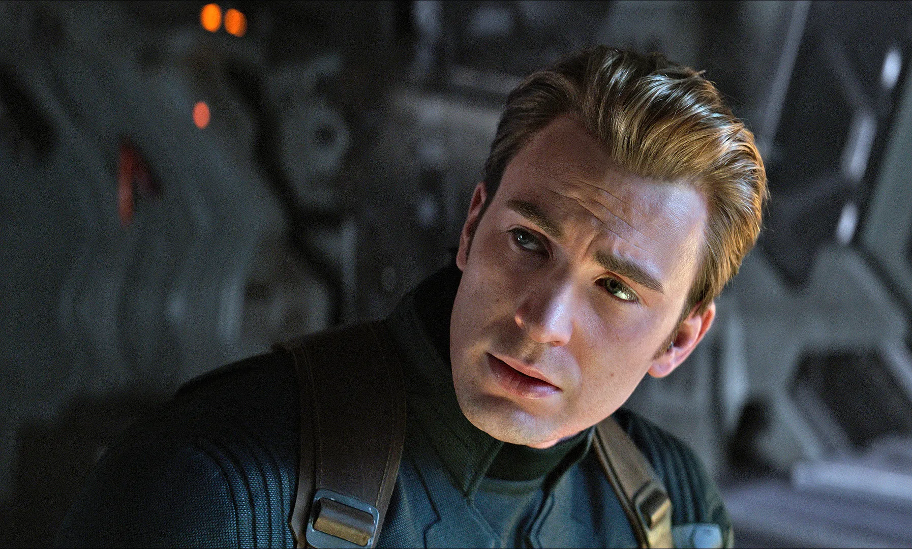
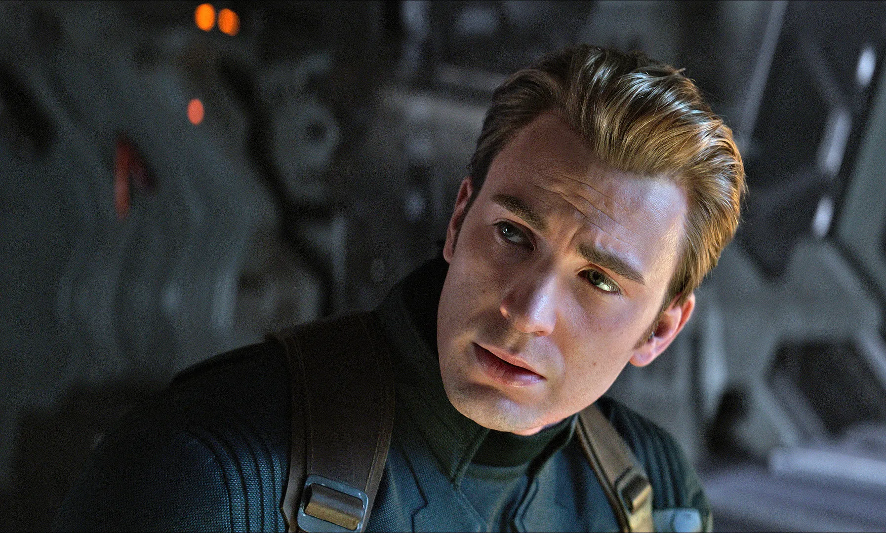

His Story
Steven Grant "Steve" Rogers is a World War II veteran, a founding member of the Avengers, and Earth's first known superhero. Rogers grew up suffering from numerous health problems, and upon the United States' entry into World War II, he was rejected from serving in the United States Army despite several attempts to enlist. Rogers ultimately volunteered for Project Rebirth, where he was the only recipient of the Super Soldier Serum developed by Abraham Erskine under the Strategic Scientific Reserve. The serum greatly enhanced Rogers' physical abilities to superhuman levels. After Erskine's assassination and being doubted by SSR head director Chester Phillips, Rogers was relegated to performing in war bond campaigns, where he posed as a patriotic mascot under the moniker of Captain America.
In 1943, Rogers rejoined the SSR after single-handedly liberating Allied prisoners from a HYDRA base, after which he began leading his team of Howling Commandos in many operations against HYDRA. His World War II exploits made Rogers a living legend, and during this time he also formed a close relationship with SSR agent Peggy Carter. Rogers ultimately helped the Allies win the war and defeat HYDRA's leader Red Skull, but crashed into the Arctic during his final mission to stop a plane carrying bombs bound for the United States. Rogers then spent sixty-six years unconscious and frozen in ice under a state of suspended animation, before he was eventually found by S.H.I.E.L.D. in the early 21st century.
When he awoke, Rogers found himself alone in a modern world that he hardly recognized, with no idea what to do with his life. Following Loki's theft of the Tesseract from S.H.I.E.L.D., Nick Fury enlisted Rogers' help in retrieving the Tesseract and stopping Loki from destroying the world. Joining the Avengers, Rogers played a key role in the Battle of New York, successfully stopping the invasion, capturing Loki, and reacquiring the Tesseract.
Rogers then joined S.H.I.E.L.D. as a counter-terrorist operative. While uncovering a conspiracy inside the organization, he encountered the Winter Soldier, and discovered that HYDRA had infiltrated S.H.I.E.L.D. intending to use Project Insight as a way to bring about a despotic new world order. He then learned that Winter Soldier was his best friend Bucky Barnes, who was believed to be killed in action, but had since been physically enhanced and brainwashed by HYDRA. Alongside Black Widow, Maria Hill and Falcon, Rogers then ended the HYDRA Uprising at the Battle at the Triskelion.
Rogers and the Avengers reassembled and embarked in an all-out war against HYDRA, recapturing the Scepter and capturing Baron Strucker. After Ultron, the new peacekeeping artificial intelligence program designed by Tony Stark and Bruce Banner, had went rogue, Rogers and the Avengers rallied to stop it from exterminating humanity. Ultron was ultimately defeated during the Battle of Sokovia, after which several of the original Avengers departed, leaving Rogers and Romanoff to lead and train the new Avengers team.
The new Avengers conducted several international missions, but failed to avert a catastrophic incident while on assignment to capture Crossbones in Nigeria. The United Nations used the disaster to ratify the Sokovia Accords, but Rogers saw their draconian nature and refused to sign, resulting in a rift between himself and Avengers co-leader Tony Stark. After the Accords ratification was bombed, with Bucky Barnes resurfacing as the primary suspect, Rogers and his anti-accord allies became fugitives of the law while assisting in his escape. Upon learning Helmut Zemo was the true mastermind, Rogers fought against Stark and his pro-accord allies before confronting Zemo in Siberia. When Zemo revealed Barnes' role in the Assassination of Howard and Maria Stark, Rogers came to Barnes' defense once an enraged Stark attacked him. They engaged in a fierce fight with Stark and emerged the victor, but with the Avengers deeply divided. Rogers eventually rescued some of his anti-accord associates from the Raft, and had Barnes sent to Wakanda to be cured of his brainwashing.
Rogers, Black Widow, Falcon, and Wanda Maximoff continued to be fugitives from the law, but when Thanos and the Black Order attacked Earth seeking the Infinity Stones, Rogers emerged from hiding in order to protect Vision. Rogers had Vision brought to Wakanda, and came to the country's defense when it was attacked by the Order with an onslaught of Outriders. Captain America failed to stop Thanos from taking the Mind Stone and wiping out half the universe's population. Rogers survived, and journeyed through space to Planet 0259-S, where the Avengers killed Thanos.
Five years after the Snap, Rogers and his fellow Avengers eventually found a way to safely travel through time, returning to various points in the past to amass all six Infinity Stones, making amends with Tony Stark in the process. The stones were used to initiate the Blip, and he resumed the mantle of Captain America once more to participate in the Battle of Earth, where he discovered he was deemed worthy of Mjølnir, wielding it in combat against Thanos and his army from an alternate timeline. After Stark sacrificed his life to wipe out Thanos' forces, Rogers volunteered to return the stones to their respective timelines. He opted to return and remain in the 1940s, where he married Peggy Carter. Rogers grew old and reunited with his friends in the present, entrusting Sam Wilson with his mantle and shield. Rogers entered retirement, with his current whereabouts unknown to the general public.
 
